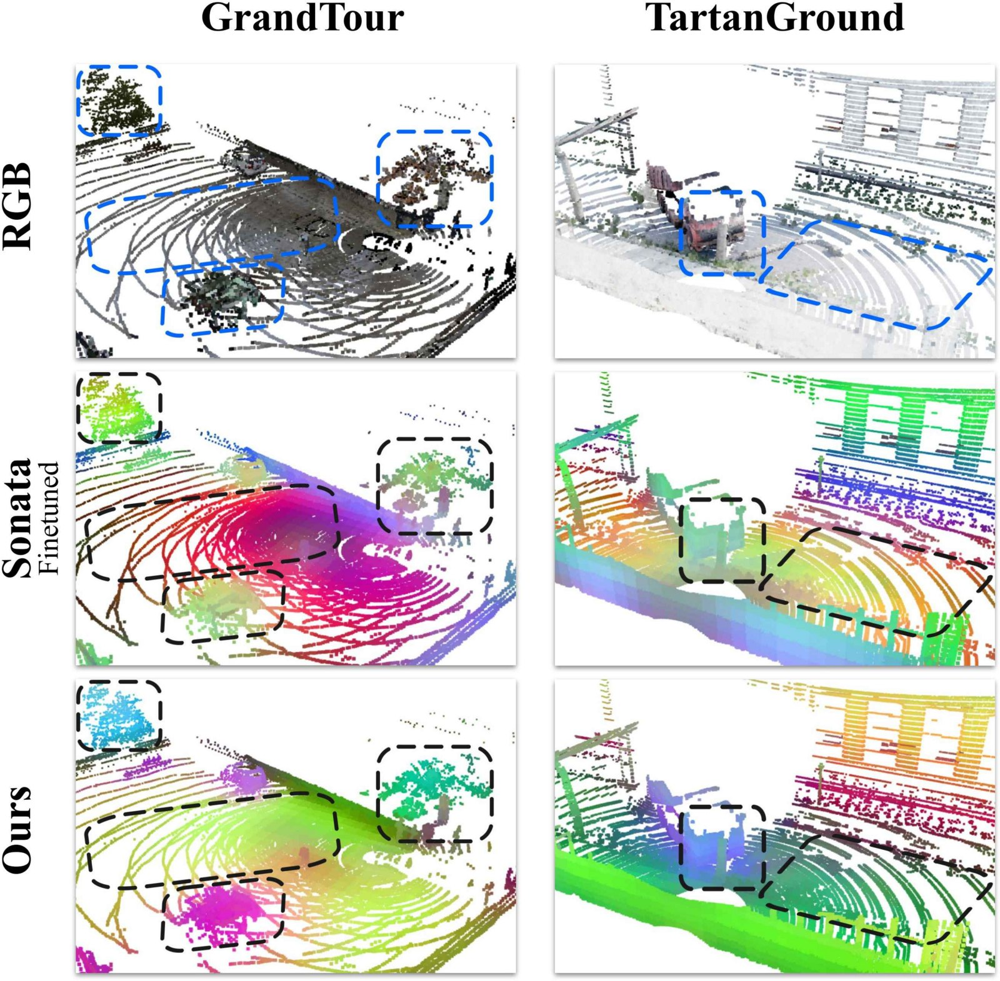

Self-supervised LiDAR representation learning
Vernata: Self-Supervised Learning of LiDAR Point Representations
1Robotics and AI Institute 2ETH Zürich IROS 2026 · under review

A multi-modal, multi-teacher self-supervised framework that learns robust point representations from outdoor LiDAR — no labels required.
Abstract
Self-supervised representations for outdoor LiDAR
LiDAR serves as a primary sensing modality for robots operating in outdoor environments. However, the performance of deep learning models in this domain is severely limited by the scarcity of labeled data, a direct result of the high cost of 3D annotation. Self-supervised learning addresses this scarcity by learning general-purpose features from unlabeled data. In this work, we present a multi-modal, multi-teacher distillation framework for self-supervised learning on outdoor LiDAR point clouds.
Building upon the Sonata architecture, we introduce Vernata, consisting of three extensions: sparse view augmentation to improve robustness against varying point densities, a memory bank mechanism to stabilize resource-constrained training, and cross-modal distillation utilizing dense, high-resolution 2D image features to enable fine-grained semantic guidance. We evaluate our method on the GrandTour, TartanGround, and Waymo datasets, as well as data collected from our own robotic platforms.
Our experiments demonstrate a significant performance improvement over Sonata baselines, yielding mIoU scores of 54.7 on TartanGround (+5.9 points, +12.1%) and 57.1 on Waymo (+7.3 points, +14.7%). Finally, we show that the self-supervised approach maintains strong performance even in reduced-modality settings (lacking color or normals), achieving competitive mIoU scores of 49.4 and 50.2 on the respective datasets.
Video
Overview
Method
A multi-modal, multi-teacher framework

Vernata extends Sonata's DINOv2-style self-distillation to outdoor LiDAR. A student and an EMA teacher operate over views of each scan; targets are formed by mapping teacher features to learnable prototypes and normalizing with the Sinkhorn–Knopp algorithm, and the student minimizes the cross-entropy to these assignments.
Three extensions address the LiDAR domain. Sparse view augmentation subsamples the global view and asks the student to match the teacher's dense view, learning density-invariant features against LiDAR's quadratic range falloff. A memory bank concatenates a FIFO queue of prototype scores before Sinkhorn–Knopp, decoupling normalization from batch size and stabilizing training on a 4-GPU budget. Cross-modal distillation backprojects high-resolution 2D features — DINOv2 patches upsampled with LoftUp — onto each point, guiding the student with fine-grained semantics that hold up at range.
Results
Linear-probing segmentation
We evaluate via linear probing for semantic segmentation. Against both the original Sonata checkpoint (frozen, ScanNet-pretrained) and a Sonata variant self-supervised finetuned on each target dataset, Vernata improves consistently across all metrics — +5.9 mIoU (+12.1%) on TartanGround and +7.3 mIoU (+14.7%) on Waymo over the finetuned baseline.
| Method | TartanGround | Waymo | ||||
|---|---|---|---|---|---|---|
| mIoU | mAcc | Acc | mIoU | mAcc | Acc | |
| Sonata | 48.7 | 60.6 | 83.6 | 43.7 | 58.7 | 85.7 |
| Sonata (finetuned) | 48.8 | 63.0 | 83.8 | 49.8 | 63.3 | 89.1 |
| Vernata (ours) | 54.7 | 69.0 | 87.0 | 57.1 | 69.0 | 91.5 |
| SP | MB | CMD | TG mIoU | TG mAcc | Waymo mIoU | Waymo mAcc |
|---|---|---|---|---|---|---|
| – | – | – | 48.8 | 63.0 | 49.8 | 63.3 |
| ✓ | – | – | 49.6 | 64.5 | 50.9 | 64.9 |
| – | ✓ | – | 50.8 | 65.8 | 51.0 | 65.1 |
| ✓ | ✓ | – | 51.6 | 66.2 | 51.8 | 65.8 |
| – | – | ✓ | 53.4 | 67.4 | 56.5 | 69.5 |
| ✓ | ✓ | ✓ | 54.7 | 69.0 | 57.1 | 69.0 |
Not directly comparable to the figures cited in Sonata: we finetune from a ScanNet checkpoint, use a 25 m × 25 m crop with a coarser inference grid, and omit test-time augmentation.
Related links
Related work
Vernata builds directly on Sonata, which addresses the “geometric shortcut” in 3D self-supervision, and on the DINOv2 self-distillation paradigm. The point backbone is Point Transformer V3, and the 2D features are upsampled with LoftUp. Our memory-bank design adapts SwAV's Sinkhorn–Knopp clustering, and the cross-modal objective follows the three-pillars (ScaLR) line of work; Concerto is a concurrent 2D–3D self-supervised approach in the indoor setting. We evaluate on GrandTour, TartanGround, and the Waymo Open Dataset.
BibTeX
Citation
@inproceedings{lemke2026vernata,
title = {Vernata: Self-Supervised Learning of LiDAR Point Representations},
author = {Lemke, Oliver and Liniger, Alexander and Gawel, Abel and Hutter, Marco},
booktitle = {IEEE/RSJ International Conference on Intelligent Robots and Systems (IROS)},
year = {2026},
note = {Under review}
}